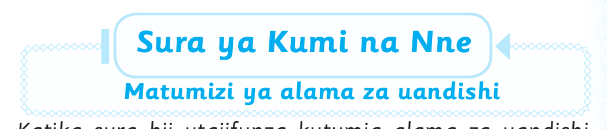

Sura ya Kumi na Nne — Somo la kwanza

Sura ya Kumi na Nne
Matumizi ya alama za uandishi
Katika sura hii utajifunza kutumia alama za uandishi.
Utaandika sentensi, habari na hadithi fupi. Utatumia
alama nne za uandishi.
Alama hizo ni mkato ( , ), nukta ( . ), mshangao ( ! ), na
kuuliza ( ? )
Somo la kwanza
Matumizi ya alama ya nukta ( . )
Katika somo hili utajifunza kutumia alama ya nukta ( . ).
Nukta inawekwa mwishoni mwa sentensi.
Mfano
Ali anakaa Musoma.
Tatu anaruka kamba.
Zoezi la kwanza
Andika na weka alama ya nukta mahali panapostahili.
1. Zubeda anapenda shule
2. Baba anakwenda Morogoro
3. Babu anafuga kuku
4. Mama anapika chai
5. Lusia anasoma Dodoma
Andika jibu kwa mkono katika sehemu hii.